Createado x Victor Caballero / @blogdopata
¿Por qué usar un sistema de control de versiones ?
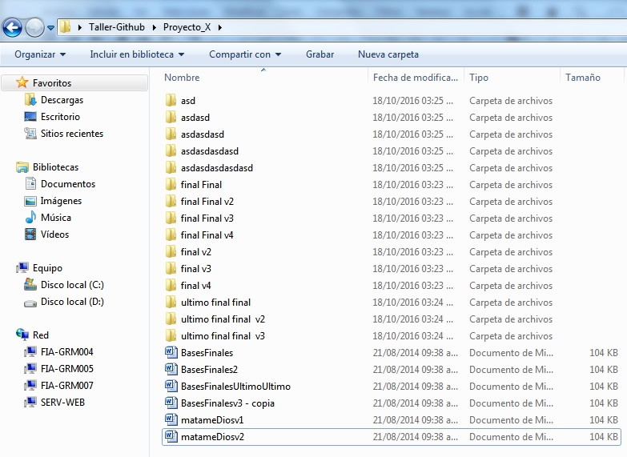Es una plataforma de desarrollo colaborativo de software para alojar proyectos utilizando el sistema de control de versiones Git. El código se almacena de forma pública, aunque también se puede hacer de forma privada, creando una cuenta de pago.
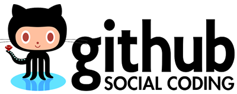
Ingresar al siguiente link:
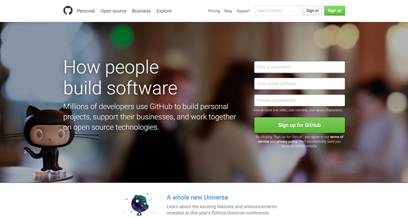
#Awesome si ya puedes ver esta vista :D
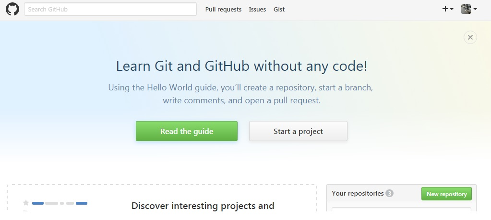
Creamos nuesto primer Repositorio
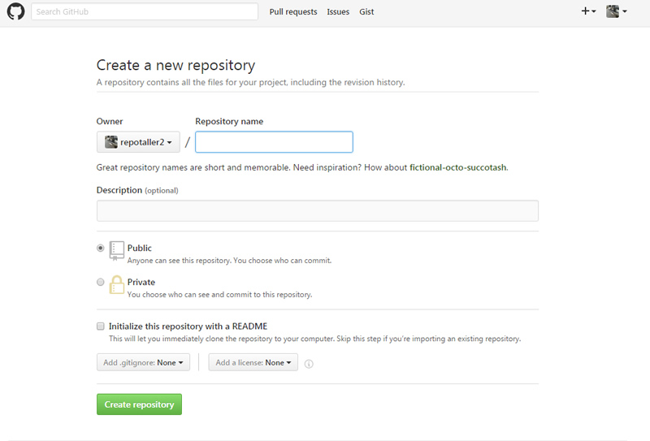
Vista General
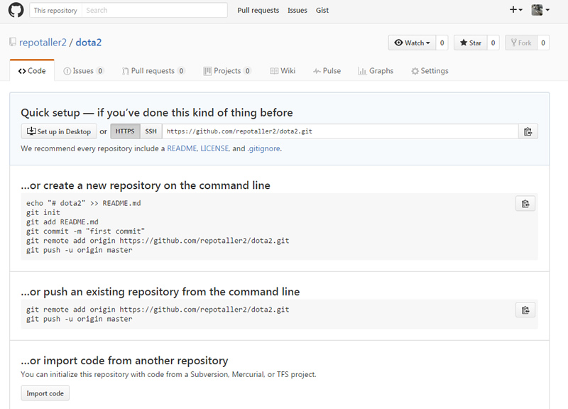
Git es un sistema distribuido de control de código fuente o SCM (en inglés Source Code Management), Un “Código fuente” pueden ser muchas cosas:
Ingresar al siguiente link:
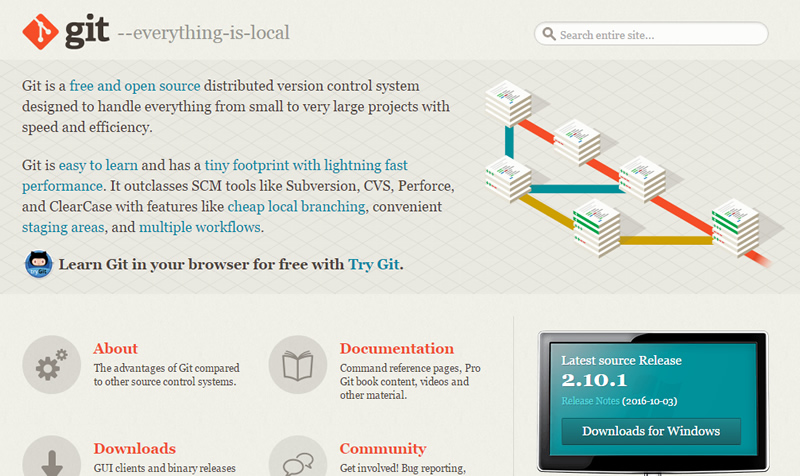
Si todo se instala bien veran :v
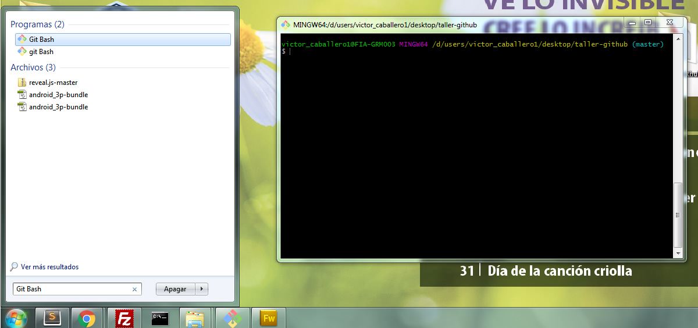
Working directory - - Staging area - - Repository
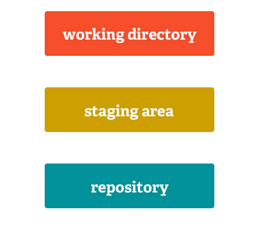Es la instancia en donde editamos y trabajamos con nuestros proyectos.
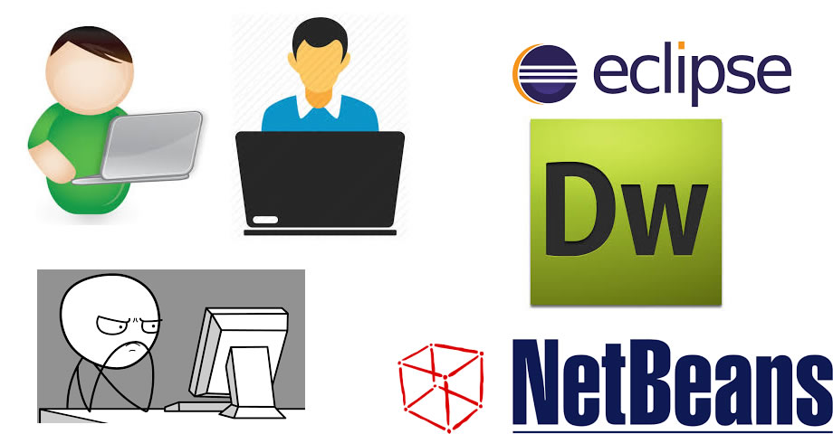Es la instancia en donde escogemos los archivos que ya están listos para pasar al tercer estado, al igual que decidimos que archivos no están listos por el momento. (Viene hacer una pre - aprobación de que contenido subir)
Nuestro repositorio :D - Es el registro de todo nuestro proyecto
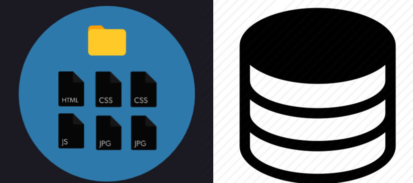
git init
git config --global user.name
git config --global user.email
git status
git add -A
git commit -m
git rm -r
git clone
git diff
git log
git remote add origin url.git
git push -u origin master
git pull url.git
git checkout SHA6845115454
git branch ||nombreRama || -D ||-b || nombreRama
git checkout ||nombreRama
git merge || nombreRama
git log > lol.txt
git reset || --soft ||--hard || nombreRama
git log --since='last month' --pretty=format:'%h,%an,%ar,%s' > log.csv
Viene hacer el commit donde nos encontramos actualmente en otras palabras es un apuntador del estado actual
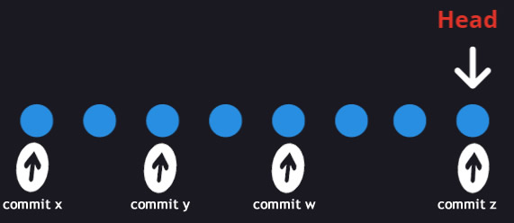Viene hacer una linea de tiempo en nuestro proyecto, que nos sirven para fixear errores, probar funcionalidades, hacer grandes cambios, etc.
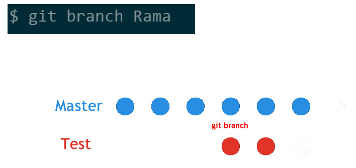Viene hacer la creación de un nuevo commit juntando una rama con otra.
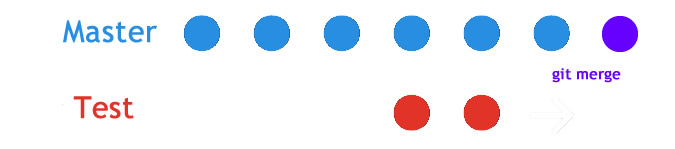